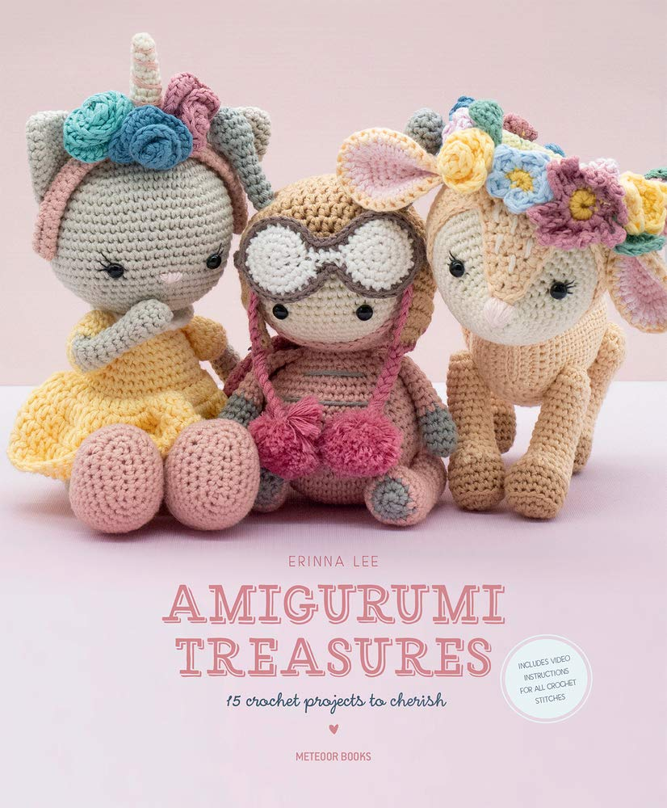

Abelhinha Aviadora setembro/2024 A inspiradora abelhinha é uma peça que exige a habilidade do desapego se a confecção for motivada por encomenda, porque a cada parte concluída o encanto e a afeição só aumentam. Esse artigo que inaugura o Blog do Mimo, traz dicas de como tecer essa fofurice com o máximo de capricho e delicadeza. O padrão que pode ser encontrado no livro de Erina Lee, Amigurimi Treasures, foi redigido na melhor sequência de execução. As partes de projeção da cabeça, pontas da touca e óculos, são as principais exigências de cuidado para garantir o bom acabamento. Uma outra dica é concluir a touca e experimentar na cabeça da abelhinha antes de costurar as antenas garantindo o posicionamento mais preciso.  Uma particularidade da abelhinha Amigumimo foi não costurar as lantejoulas sugeridas na asa pelo padrão, uma vez que a peça se destinava a uma criança pequena e esse detalhe de embelezamento foi preterido para maior segurança da peça.